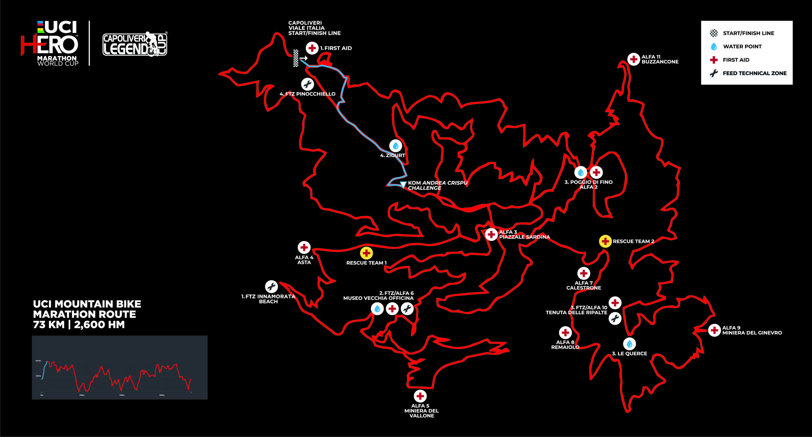

Using the BikeScout Engine, we processed the 73.66 km course of the 2026 Capoliveri Legend Cup.
Our predictive models integrated recent rainfall data (23.4mm) with real-time soil evapotranspiration to decode the traction levels and identify critical tactical requirements for this World Cup MTB Marathon.

MISSION TELEMETRY:
- > TOTAL DISTANCE: 73.66 KM
- > TOTAL ASCENT: 2528.8 M
- > STARTING WALL: 2.78 KM @ 11.2%
- > PEAK DESCENT DETECTED: -35.0%
- > MUD RISK SCORE: 0.55 (LOW)
Mission Briefing:
Download tactical PDF and raw JSON metrics for Capoliveri.
Tactical Breakdown
1. Effort Profile: "The Vertical Wall Start"
The race begins with unprecedented intensity. The first climb at KM 0 features an average gradient of 11.2% for nearly 3 km.
- Extreme VAM: The estimated VAM of 1846 m/h indicates that this section will be tackled at professional paces or in full anaerobic threshold.
- Risk: There is a very high risk of "blowing up" within the first 10 minutes. The 6.08 W/kg value suggests an "all-out" start strategy.
2. Terrain Analysis: "Hardpack & Speed"
Data from the TAEL© v3.2 model regarding mud risk (0.55 - Low) indicates that evapotranspiration has been sufficient to compact the ground despite previous rain.
- Traction: Traction will be at its peak. Use low-profile tread tires (semi-slicks on the rear) to favor rolling speed on the hardpack surface.
- Setup: Slightly higher tire pressures could reward riders on the fast, compact sections typical of Elba Island.
3. Final "Blind Spot" Alert
The most striking data is hidden within the Tactical Action Zones (TAZ) of the final 10 km.
- Extreme Gradients: We detected three descents with gradients of -34.5% and -35%. These are technical "drops" requiring the center of gravity to be shifted completely rearward.
- Fatigue vs. Technique: Arriving after 65 km and 2000m of gain, the probability of technical error is at its peak here.
4. Metabolic and Hydration Management
The nutrition plan indicates a very high fluid intake requirement of 953 ml/h.
- Thermal Stress: With a "feels like" temperature of 21.2°C, the May sun in Elba will require nearly one liter of fluids per hour.
- Sodium: 763 mg/h of sodium is required to prevent cramping during the final explosive climbs (KM 72.24).
Mission Strategy Summary
This is a course for "powerful climbers" with a finale for "sharp-minded downhillers."
- 1. Survive the initial wall without burning all your "matches."
- 2. Fuel heavily during the middle phase (KM 20-50).
- 3. Monitor tire pressure to avoid "bouncing" off the final -35% technical descents.
Conclusion: Ground Truth
Capoliveri 2026 is a race of two halves. Success requires the raw power of a climber for the first 50km and the technical nerves of a downhiller for the final 10km.